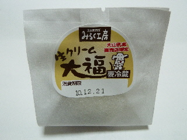
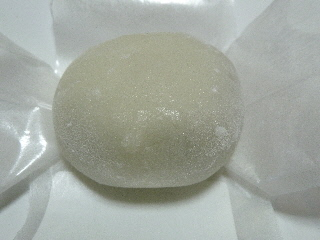
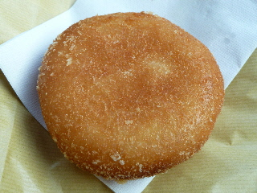

大山PAの生クリーム大福
2010/12/19

バッチリ包装してある大福ですね。ちょっと高級な感じです。

袋を開けると、普通の大福が出てきました。
クリーム少な目で、大福味が強かったです。
王道な味だって思いました。
鳥取県西伯郡伯耆町久古1379
2010/12/19

バッチリ包装してある大福ですね。ちょっと高級な感じです。

袋を開けると、普通の大福が出てきました。
クリーム少な目で、大福味が強かったです。
王道な味だって思いました。
2010/12/19

まん丸で格好がいいカレーパンです。
揚げパンで油っぽくて食べにくいですが、厚めの紙が付いてたので、食べやすかったです。親切ですね。
フワフワのパンにマイルドなカレーが入っていました。
ドライブの休憩に食べるのにいいおやつだなって思いました。
最近の高速って、色んな場所でパンを販売していますね。